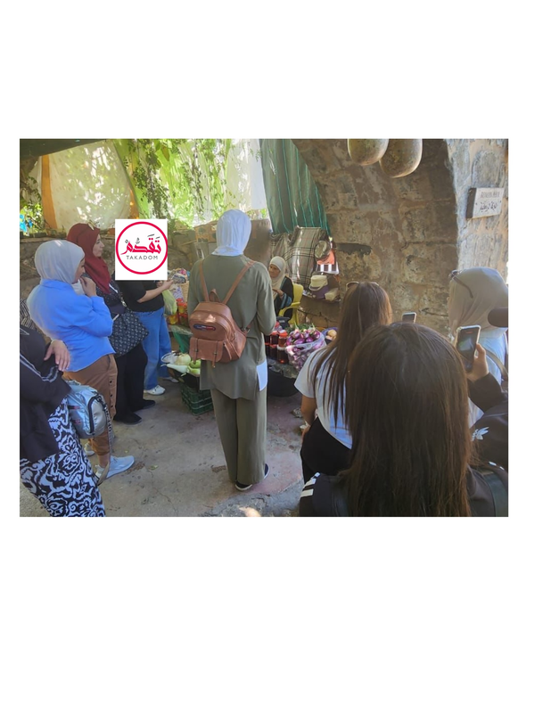
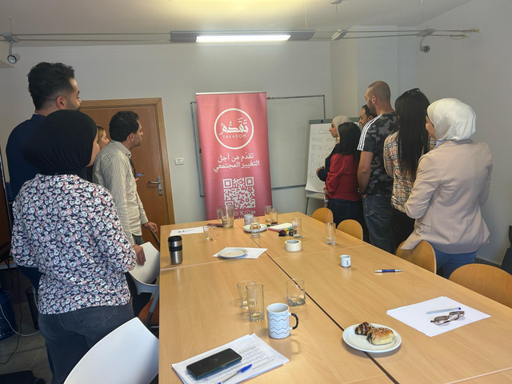

Women’s Empowerment
Leadership, advocacy, communication, economic skills and meaningful participation in community life.

We connect leadership, resilience, civic participation, dialogue and practical opportunities so people can transform ideas into community action.
Takadom’s work is designed around interconnected areas that strengthen people and the communities around them.
Leadership, advocacy, communication, economic skills and meaningful participation in community life.
Civic participation, creative expression, critical thinking and opportunities to become active changemakers.
Safe, trauma-responsive spaces for grounding, reflection, trust, stress management and well-being.
Inclusive dialogue, shared learning and community engagement that foster participation and understanding.
Digital marketing, entrepreneurship, clean technology and practical skills for sustainable opportunities.
Support for vulnerable and displaced communities, women-led households and families in periods of crisis.
Our activities use interactive workshops, guided reflection, peer learning, mentoring, practical exercises, field visits and community initiatives.
Create safe spaces where participants can express experiences, needs and ideas.
Strengthen leadership, communication, advocacy, resilience and practical skills.
Build networks among participants, community actors, civil society and international partners.
Support people to translate learning into initiatives, participation and community leadership.


Leadership, public speaking, negotiation, advocacy and inclusive participation for Palestinian women and youth leaders.

Personal development, emotional awareness, leadership and community action for women.

Storytelling, resilience, creative expression and meaningful civic engagement for young people.
Explore Program →